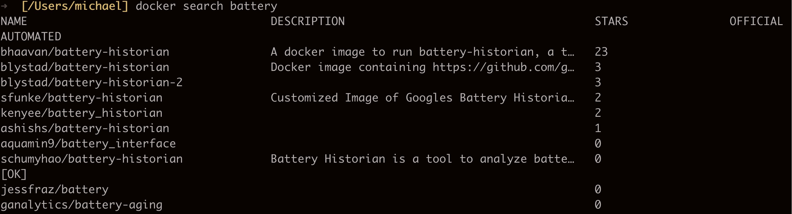
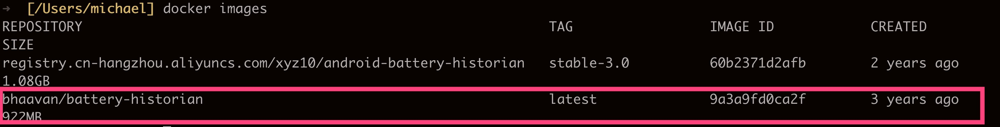
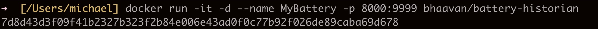
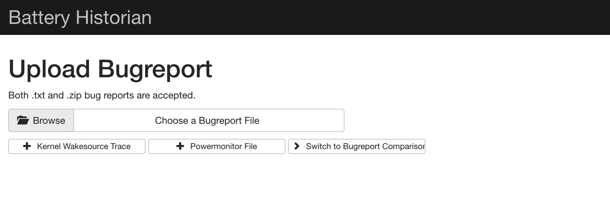

Mac Docker安装battery-historian
环境说明
mac os 版本: 10.15.2 |
- 如果使用github上的官方安装方法安装，需要vpn，尝试使用vpn，依然没有反应，不知道是不是网络问题，不去纠结。换其他方法。
- 使用阿里云上images出现无法打开的bugtrport.zip的问题，如果有大神指导请指教。
下面说说我的办法，需要使用一点点vpn（其他方法也是需要的）。
安装docker环境
下载文件Docker dmg , 回下载一个Docker.dmg文件，直接安装就行。如果在下载文件的过程中需要注册，就注册下。
可以在本地使用，而不是用云的相关功能。
在官方文档中有详细的方法，按步骤就行。
最后打开终端，check docker 是否安装成功：
[user/home]: docker --version |
安装battery-historian
执行docker search battery:

选择一个结果，例如：下载 docker pull bhaavan/battery-historian , 此过程需要等待一会，我在使用wifi下载时会出现卡死的情况，换成手机热点就很快下载完成了。
查看一下结果docker images:

运行：docker run -it -d --name MyBattery -p 8000:9999 bhaavan/battery-historian

此时打开Docker app的Dashboard可以进行管理，当然也不需要这步，只是下次开机不需要输入那些命令，直接鼠标点击就可以管理
在chrome中输入 ： http://localhost:8000/， 注意这里的8000和之间执行docker run时指定的命令需要是一样的。界面如下：

不过可能这个界面你无法显示，没有报错，一直是个白色界面，这时需要你打开vpn，可能是需要下载特定的js包，只需要使用这一次，以后就不需要了。